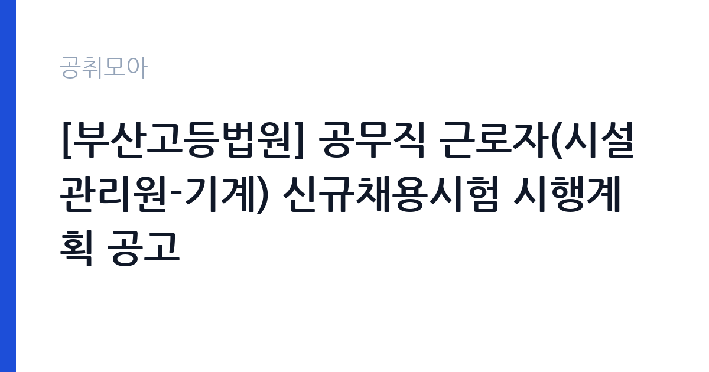

[국가기관] [부산고등법원] 공무직 근로자(시설관리원-기계) 신규채용시험 시행계획 공고
대법원 부산고등법원 · 부산 · 마감 2026-11-11 (D-14) · 출처 나라일터

한눈에 보는 모집 조건
| 기관 | 대법원 부산고등법원 |
|---|---|
| 공고명 | [부산고등법원] 공무직 근로자(시설관리원-기계) 신규채용시험 시행계획 공고 |
| 고용형태 | 공무직 |
| 근무지 | 부산 |
| 게시일 | 2026-10-28 |
| 마감일 | 2026-11-11 (D-14) |
지원자격, 이렇게 읽으세요
- 공무직 근로자(시설관리원-기계) 1명
- 접수 ~2026-11-11 마감
- 세부 조건은 원문 공고문 확인
공무직 근로자는 공무원이 아니라 근로기준법이 적용되는 근로자이지만 기간의 정함이 없는 무기계약으로 채용되는 경우가 많아 정년까지 근무가 가능합니다. 채용은 공무원 시험과 달리 기관의 자체 전형으로 진행되고 인사 규정과 임금표를 적용받습니다. 이번 공고는 대법원 부산고등법원이 직접 진행하는 자체 전형입니다. 시설 관리 직무는 관련 자격이나 경력을 우대하는 경우가 많습니다. 전기기능사나 설비보수, 소방설비 관련 자격이 있으면 유리하고 일부 공고는 자격을 필수로 요구합니다. 운전면허와 교대 근무 가능 여부도 자주 확인하는 항목입니다. 시설 규모가 큰 기관은 담당 구역이 나뉘어 있어 구체적인 업무 범위를 공고문에서 확인해야 합니다. 국가공무원법상 결격사유와 신체 조건 확인 절차가 있습니다. 제출서류는 공고문에 적힌 순서대로 정리하면 담당자가 확인하기 쉽습니다. 공고문의 응시자격 표를 보면 자격 항목이 여러 줄로 나뉘어 있으므로, 각 줄을 하나씩 체크하며 본인 해당 여부를 표시해 두면 누락을 줄일 수 있습니다. 동일 직무 경력자와 경쟁하게 되므로, 관련 경험이 있다면 증명서에 업무 내용이 구체적으로 적히도록 요청하십시오. 이 공고 원문에 적힌 응시 조건 문구는 '모집분야 : 기계 ○ 선발직급 : 공무직 근로자 ○ 고용형태 : 기간의 정함이 없는 공무직 근로자 ○ 자격요건 : 해당 분야의 기능사 이상 자격증 소지자 ○ 접수기간 : 2026.'입니다. 문구를 그대로 읽고 본인 해당 여부를 하나씩 표시해 두면 서류 단계에서 탈락하는 일을 줄일 수 있습니다.
이 공고의 포인트
이 건은 대법원 부산고등법원가 같은 시기에 낸 2개 모집분야 가운데 시설 관리·경비 직무입니다. 다른 직무 공고와 요건이 다르므로 지원 전에 모집분야 표를 대조해야 합니다. 이 공고의 첫 번째 포인트는 고용 형태입니다. 무기계약으로 채용되면 정년까지 근무가 가능해 재계약 부담이 없습니다. 반대로 기간제로 채용되는 공고라면 계약 기간을 먼저 확인해야 합니다. 두 번째는 업무 범위가 명확하다는 점입니다. 시설 관리·경비 직무로 채용되므로 배치 이후 담당 업무가 크게 흔들리지 않습니다. 세 번째는 근무지입니다. 부산 지역 근무로 수도권 공고에 비해 지원자 분포가 넓지 않아 상대적으로 경쟁이 분산되는 경우가 있습니다. 근무 조건이 공고문에 구체적으로 적혀 있어 지원 전에 판단할 정보가 충분합니다. 같은 직무로 함께 올라온 공고 5건 가운데 마감이 중간에 위치하므로 다른 공고와 일정이 겹치는지 확인하십시오. 다만 선발 인원이 1명으로 많지 않아 자격을 갖춘 지원자가 몰리면 경쟁률이 높아질 수 있습니다.
전형은 어떻게 진행되나
서류전형과 면접전형 외에 직무수행능력 평가가 붙는 경우가 있습니다. 평가 방식은 공고문에 구체적으로 적혀 있으므로 어떤 항목에 배점이 높은지 먼저 파악하십시오. 면접에서는 지원 동기보다 실제 업무 경험에 대한 질문이 많고, 답변의 구체성이 평가를 가릅니다. 전형 일정은 서류 마감 이후 빠르게 진행되므로 연락 가능한 번호를 정확히 기재하고 문자와 메일을 수시로 확인해야 합니다. 최종 단계에서는 결격사유 조회와 신체검사가 진행됩니다. 결과 발표는 문자와 이메일로 동시에 이뤄지지 않는 경우가 있어 두 경로를 모두 확인하십시오.
원문에서 확인한 전형 방식
○ 모집분야 : 기계 ○ 선발직급 : 공무직 근로자 ○ 고용형태 : 기간의 정함이 없는 공무직 근로자 ○ 자격요건 : 해당 분야의 기능사 이상 자격증 소지자 ○ 접수기간 : 2026. 11. 9. ~ 2026. 11. 11. ○ 응시방법 : 방문접수 또는 우편접수 ○ 문의처 : 051-590-1127(부산고등법원 채용담당자)
이런 분께 추천해요
- 시설·설비 점검 경력이나 관련 자격을 가진 분
- 교대·야간 근무와 비상 출동에 응할 수 있는 분
- 안전 점검 기록을 성실히 관리하는 분
지원 전 체크리스트
- 응시자격 요건과 경력 기준을 충족하는가 — 경력은 증명서로 입증해야 합니다
- 무기계약 여부와 정년 기준을 공고문에서 확인했는가
- 제출서류 목록을 모두 준비했는가 — 누락 시 서류 단계에서 탈락합니다
- 접수 마감 2026-11-11 이전에 접수 방식을 확인해 제출했는가
모집 일정과 제출 타이밍
공고 게시일은 2026-10-28, 접수 마감은 2026-11-11입니다. 준비 기간은 약 14일로 서류 준비와 자격 증빙을 함께 처리하기에는 넉넉하지 않은 편입니다. 첫 이틀 안에 공고문과 첨부 서식을 내려받아 요건을 확인하고 남은 기간에 증빙 서류를 발급받는 일정이 현실적입니다. 면접은 서류 합격자 발표 후 짧은 간격으로 진행되는 경우가 많으므로 서류 제출과 동시에 면접 준비를 시작하는 편이 안전합니다. 마감일에는 접수 시스템이 몰리므로 하루 전까지 제출을 마치는 것이 좋습니다. 접수 첫날에 몰리면 시스템 접속이 지연될 수 있으므로 오전 시간대 제출이 안전합니다.
직무 이해하기: 국가기관
법무·사법 기관은 재판과 송무, 수사, 교정 업무를 담당합니다. 법원행정처와 각급 법원은 재판 지원과 등기, 가족관계 업무를 운영하며, 법무부는 출입국과 보호, 교정 시설을 관리합니다. 보안과 비밀 유지 요건이 다른 기관보다 엄격합니다. 시설 관리 업무는 건물과 설비가 정상 작동하도록 점검하고 고장을 처리하는 일입니다. 전기·수도·냉난방 설비의 작동 상태를 확인하고, 이상이 있으면 정비를 요청하거나 직접 보수합니다. 출입 통제와 순찰, 방문자 안내, 주차 관리가 함께 붙는 경우도 많습니다. 야간이나 휴일에 비상 연락을 받고 출동하는 체계가 운영되므로 교대 근무가 포함될 수 있습니다. 시설 안전 점검 기록을 남기는 것도 중요한 업무입니다. 근무조는 사업 일정과 기상 상황에 맞춰 편성되므로 면접에서 배치 구역을 확인하는 것이 좋습니다. 직무 교육은 입사 후 기관 자체 계획에 따라 진행되므로 사전 경험이 없어도 시작할 수 있습니다. 이 건의 근무 대상 지역·부서는 원문 기준 '시설관리원-기계'입니다 원문에 ': 공무직 근로자 ○ 고용형태 : 기간의 정함이 없는 공무직 근로자 ○ 자격요건 : 해당 분야의 기능사 이상 자격증 소지자 ○ 접수기간 : 2026'라는 조건이 명시되어 있습니다.
자기소개서 작성 팁
시설 관리 지원서는 고장을 예방한 경험과 안전 의식을 보여주는 것이 핵심입니다. 정기 점검표를 만들어 운영한 경험, 위험 요소를 발견해 조치한 사례를 구체적으로 쓰십시오. 자격과 경력은 서류에 드러나므로 자소서에서는 판단 과정과 협업 방식을 서술하는 편이 좋습니다. 장기 근무 의사와 교대 근무 수용 여부를 분명히 밝히십시오. 문항별 글자 수 제한을 먼저 확인하고, 각 문항의 첫 문장에 결론을 배치하는 방식이 읽기 쉽습니다. 지원 동기는 기관의 어떤 사업에 기여하겠다는 한 문장으로 시작하고, 이어서 본인의 경험을 근거로 붙이십시오. 감점을 피하려면 다른 기관에 보낼 수 있는 범용 문장을 그대로 쓰지 않는 것이 중요합니다. 기관 이름과 사업명이 문장 안에 자연스럽게 들어가야 준비도가 드러납니다.
면접 준비 포인트
면접에서는 돌발 상황 대응과 협업 태도를 봅니다. 누수가 발생했을 때 첫 조치가 무엇인지, 시설 고장 신고가 여러 건 겹칠 때 우선순위를 어떻게 정할지 묻습니다. 안전 점검 기록을 어떻게 관리해왔는지 구체적으로 답하십시오. 교대 근무와 야간 대응 가능 여부도 반드시 확인합니다. 면접은 공고문에 적힌 직무 내용을 얼마나 이해하고 있는지 확인하는 질문으로 시작하는 경우가 많으니, 모집분야 문구를 그대로 읽어 두는 것이 도움이 됩니다. 면접은 공고문에 적힌 직무 내용을 얼마나 이해하고 있는지 확인하는 질문으로 시작하는 경우가 많으니, 모집분야 문구를 그대로 읽어 두는 것이 도움이 됩니다.
급여·근무조건 읽는 법
대법원 부산고등법원의 구체적인 보수 수치는 이 공고 원문의 처우 항목과 보수표에서 확인해야 합니다. 공시 자료로 확인되지 않은 금액은 이 글에서 추정해 제시하지 않습니다. 알리오 2025년 결산 공시 기준 공공기관 전체 일반정규직 1인당 평균보수는 7,376만 9천원, 신입사원 평균초임은 4,031만 6천원입니다(무기계약직 미포함). 시설 관리 직무의 보수는 무기계약직 또는 공무직 임금표에 따라 기본급과 수당으로 구성됩니다. 자격 수당과 교대 근무에 따른 야간·휴일 수당이 붙는 경우가 있어 기본급만으로 비교하기 어렵습니다. 정확한 금액과 수당 항목은 공고문 처우표에서 확인하십시오. 무기계약이면 정년까지 근무가 가능해 장기 소득 안정성이 큽니다. 2026년 적용 최저임금은 시급 10,320원, 월 환산 2,156,880원(주 40시간·209시간 기준)입니다. 고용노동부 고시 제2025-47호로 확정된 금액입니다. 공고문에 금액이 제시되지 않은 항목은 원문 보수표나 처우 설명에서 확인해야 하며 확인되지 않은 수치는 쓰지 않는 것이 원칙입니다. 비교할 때는 월 급여뿐 아니라 상여·명절휴가비·복지포인트·초과근무수당까지 포함한 연간 총액으로 계산하십시오. 기간제라면 계약 기간 동안의 총액을, 무기계약이라면 호봉 상승과 정년까지의 누적 소득을 기준으로 판단하는 편이 정확합니다.
자주 묻는 질문
- 선발 인원은 몇 명인가요?
공고문 기준 1명입니다. 직종별로 인원이 나뉘는 경우가 있으니 모집분야 항목을 함께 확인하십시오. - 근무지는 어디인가요?
부산 지역의 대법원 부산고등법원 소속 근무지입니다. 세부 주소와 출퇴근 조건은 원문 공고문에서 확인할 수 있습니다. - 보수는 얼마인가요?
채용 신분(공무직)과 기관 임금 규정에 따라 정해지며 구체적인 금액은 공고문 처우 항목에 제시됩니다. 금액이 공개되지 않은 경우에는 원문의 보수표를 확인하십시오.
함께 보면 좋은 공고
[국가기관] 2026년 제주세관 공무직(청소원, 여행자통관지원요원) 채용 공고 — 마감 2026-11-05[국가기관] 2026년 제4회 기상청 공무원 경력경쟁채용시험 공고 — 마감 2026-11-09[국가기관] 공주교육대학교 국가직공무원 행정9급 전입 희망자 모집 공고 — 마감 2026-11-10출처: 나라일터 공개정보를 바탕으로 공취모아가 정리한 안내글입니다. 모집 조건·일정은 변경될 수 있으니 지원 전 반드시 원문 공고문을 확인하세요. 본 글은 정보 제공용이며 합격을 보장하지 않습니다.